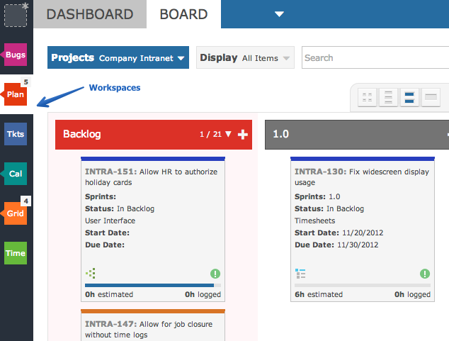

You can set up your view of the world that contains just the projects you need to see. Such views define what you see in terms of data, columns, colors and data sorting.

You can give each workspace it's own code, color and then share it with co-workers.
Shared workspaces can be locked to prevent co-workers from changing the data that is included. You can set up scheduled reporting, email alerts and more.
NotePlease read the Workspace Guide for more information.